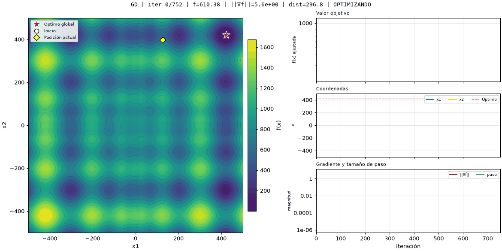
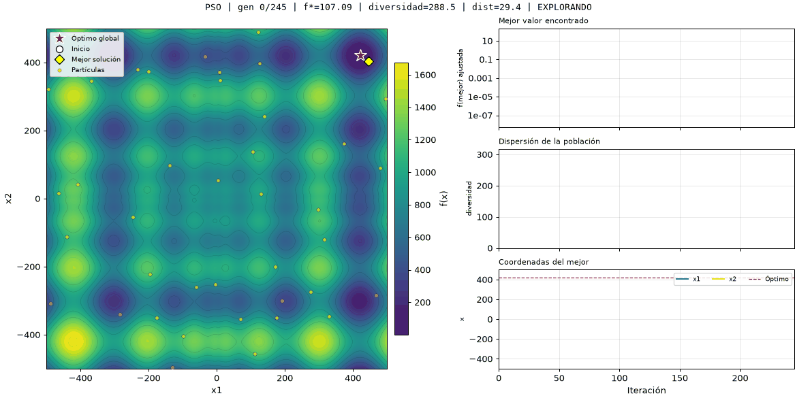

Lo que encontramos
de éxito de la evolución diferencial (DE) en 2D y en 3D.
de éxito del descenso por gradiente en 2D y en 3D, el método más barato.
evaluaciones gastan los tres heurísticos, pero solo DE acierta casi siempre.
mínimos locales en $d$ dimensiones. Solo uno es el global.
¿Qué se optimizó?
La función de Schwefel (Schwefel, 1981) es una de las más engañosas de la optimización continua y se incluye entre las funciones de prueba recopiladas en la literatura (Jamil y Yang, 2013). Tiene muchos valles y los mejores quedan lejos unos de otros, así que obliga a explorar. Se define en la Ecuación 1 y su superficie en dos dimensiones se muestra en la Figura 1.
Ficha técnica
$$f(\mathbf{x}) = 418.9829\, d - \sum_{i=1}^{d} x_i \sin\sqrt{|x_i|} \tag{1}$$
- Dominio: $x_i \in [-500, 500]$
- Mínimo global: $f = 0$ en $x_i = 420.9687$
- Paisaje: multimodal, no convexo y separable
Figura 1
Superficie de la función de Schwefel en dos dimensiones
Nota. Elaboración propia a partir de la Ecuación 1 con $d = 2$. El mínimo global se encuentra en la esquina positiva del dominio.
¿Qué la hace difícil?
Cada eje tiene 8 mínimos locales, así que en $d$ dimensiones hay $8^d$.
El segundo mejor valle está al otro lado del dominio y solo es 118.44 peor por eje.
Dentro de cada valle la función es suave y fácil de descender. El reto es elegir el valle.
Cuatro formas de buscar el mínimo
Uno usa la pendiente de la función y los otros tres solo necesitan evaluarla. Las Ecuaciones 2 a 5 resumen la regla de actualización de cada uno.
Descenso por gradiente
Usa ∇fUn único punto que sigue la dirección de máximo descenso (Nocedal y Wright, 2006).
Algoritmo evolutivo
Solo fTorneo, cruce BLX-α (Eshelman y Schaffer, 1993), mutación decreciente y elitismo (Eiben y Smith, 2015).
Optimización por enjambre de partículas (PSO)
Solo fPartículas guiadas por su mejor posición y la mejor del grupo (Kennedy y Eberhart, 1995).
Evolución diferencial (DE)
Solo fMutación por diferencias entre individuos y selección uno a uno (Storn y Price, 1997).
Contar el esfuerzo en una sola unidad
Una iteración de PSO evalúa $f$ en 40 partículas y una del gradiente calcula un solo gradiente. Por eso no se compara por iteraciones. Se cuentan por separado las evaluaciones de $f$, que llamamos $E_f$, y las de $\nabla f$, que llamamos $E_{\nabla f}$, y luego se unen en una sola cifra.
Aproximar un gradiente por diferencias centrales (Ecuación 6) cuesta dos evaluaciones de $f$ por coordenada (Nocedal y Wright, 2006), es decir, $2d$ en total. De ahí sale el costo equivalente de la Ecuación 7:
En 2D un gradiente equivale a 4 evaluaciones de $f$ y en 3D, a 6.
Qué se cuenta
- Solo las evaluaciones que el algoritmo necesita para avanzar.
- En el algoritmo evolutivo, los individuos élite no se vuelven a evaluar.
- El gradiente es analítico y en la práctica cuesta menos de $2d$. Usamos esa cifra por ser la regla conservadora.
- Los métodos poblacionales dejan de evaluar cuando el mejor valor no cambia durante 50 iteraciones seguidas, para no gastar evaluaciones sin avanzar.
Cómo se hizo el experimento
Las condiciones comunes se resumen en la Tabla 1 y los hiperparámetros de cada método en la Tabla 2.
Tabla 1
Condiciones comunes del experimento
| Condición | Valor |
|---|---|
| Corridas independientes por método y dimensión | 30 |
| Punto inicial | Aleatorio |
| Dominio | $[-500, 500]^d$ |
| Iteraciones máximas | 2000 |
| Parada de los métodos poblacionales | 50 iteraciones sin cambio |
| Parada del descenso por gradiente | Paso menor que $10^{-6}$ |
| Criterio de éxito | $f \le 10^{-3}$ |
Nota. Los métodos poblacionales son el algoritmo evolutivo, PSO y DE.
Tabla 2
Hiperparámetros de cada método
| Método | Parámetros |
|---|---|
| Descenso por gradiente | $\eta = 0.1$ |
| Algoritmo evolutivo | Población 40, tasa de mutación 0.1 |
| PSO | Población 40, $w = 0.7$, $c_1 = c_2 = 1.5$ |
| DE | Población 40, $F = 0.8$, $CR = 0.9$ |
Nota. Se usaron valores estándar y no se ajustaron para cada método.
Un punto frente a una nube
Las Figuras 2 y 3 muestran la misma función en 2D y el mismo óptimo, marcado con una estrella roja.
Figura 2
Trayectoria del descenso por gradiente sobre la función de Schwefel

Nota. Corrida individual en 2D. Un solo punto baja por la ladera más cercana y se detiene en el primer valle.
Figura 3
Evolución del enjambre de partículas sobre la función de Schwefel

Nota. Corrida individual en 2D. La nube empieza repartida por todo el dominio y se concentra en un valle.
30 corridas por método
Las Tablas 3 y 5 reportan el valor final de $f$ y el costo promedio por corrida en 2D y en 3D. Las Figuras 4 y 5 los resumen y las Tablas 4 y 6 añaden iteraciones y tiempo.
Tabla 3
Resultados de los cuatro métodos en dos dimensiones
| Método | M | DE | Mejor | Peor | Éxito | $E_f$ | $E_{\nabla f}$ | $E_{eq}$ |
|---|---|---|---|---|---|---|---|---|
| Descenso por gradiente | 456.37 | 174.96 | ≈ 0 | 710.70 | 3 % | 0 | 553 | 2 214 |
| Algoritmo evolutivo | 55.27 | 60.10 | ≈ 0 | 118.44 | 53 % | 4 576 | 0 | 4 576 |
| PSO | 74.35 | 77.88 | ≈ 0 | 236.88 | 47 % | 6 775 | 0 | 6 775 |
| DE | ≈ 0 | ≈ 0 | ≈ 0 | ≈ 0 | 100 % | 5 040 | 0 | 5 040 |
Nota. M = media; DE = desviación estándar; Mejor y Peor = menor y mayor valor final de $f$; Éxito = porcentaje de corridas con $f \le 10^{-3}$; $E_f$ = evaluaciones de $f$; $E_{\nabla f}$ = evaluaciones del gradiente; $E_{eq}$ = evaluaciones equivalentes (Ecuación 7). Todos los valores se calculan sobre 30 corridas independientes y las evaluaciones son promedios por corrida. El símbolo ≈ 0 indica un valor menor que $10^{-9}$. En negrita aparece el mejor resultado de $M$, de Éxito y de $E_{eq}$.
Figura 4
Tasa de éxito y costo de cada método en dos dimensiones
(a) Tasa de éxito (más alto es mejor)
(b) Evaluaciones equivalentes $E_{eq}$ (más bajo es mejor)
Nota. Cada valor es el promedio de 30 corridas independientes.
Tabla 4. Iteraciones y tiempo
Tabla 4
Iteraciones y tiempo promedio por corrida en dos dimensiones
| Método | Iteraciones | Tiempo (s) |
|---|---|---|
| Descenso por gradiente | 553 | 0.017 |
| Algoritmo evolutivo | 119 | 0.023 |
| PSO | 168 | 0.015 |
| DE | 125 | 0.022 |
Nota. Promedios de 30 corridas independientes.
Tabla 5
Resultados de los cuatro métodos en tres dimensiones
| Método | M | DE | Mejor | Peor | Éxito | $E_f$ | $E_{\nabla f}$ | $E_{eq}$ |
|---|---|---|---|---|---|---|---|---|
| Descenso por gradiente | 667.84 | 222.47 | 118.44 | 1125.73 | 0 % | 0 | 575 | 3 449 |
| Algoritmo evolutivo | 86.85 | 92.96 | ≈ 0 | 355.32 | 43 % | 7 242 | 0 | 7 242 |
| PSO | 109.88 | 105.95 | ≈ 0 | 355.32 | 37 % | 7 884 | 0 | 7 884 |
| DE | 4.42 | 24.21 | ≈ 0 | 132.61 | 97 % | 8 343 | 0 | 8 343 |
Nota. M = media; DE = desviación estándar; Mejor y Peor = menor y mayor valor final de $f$; Éxito = porcentaje de corridas con $f \le 10^{-3}$; $E_f$ = evaluaciones de $f$; $E_{\nabla f}$ = evaluaciones del gradiente; $E_{eq}$ = evaluaciones equivalentes (Ecuación 7). Todos los valores se calculan sobre 30 corridas independientes y las evaluaciones son promedios por corrida. El símbolo ≈ 0 indica un valor menor que $10^{-9}$. En negrita aparece el mejor resultado de $M$, de Éxito y de $E_{eq}$.
Figura 5
Tasa de éxito y costo de cada método en tres dimensiones
(a) Tasa de éxito (más alto es mejor)
(b) Evaluaciones equivalentes $E_{eq}$ (más bajo es mejor)
Nota. Cada valor es el promedio de 30 corridas independientes.
Tabla 6. Iteraciones y tiempo
Tabla 6
Iteraciones y tiempo promedio por corrida en tres dimensiones
| Método | Iteraciones | Tiempo (s) |
|---|---|---|
| Descenso por gradiente | 575 | 0.019 |
| Algoritmo evolutivo | 190 | 0.038 |
| PSO | 196 | 0.018 |
| DE | 208 | 0.037 |
Nota. Promedios de 30 corridas independientes.
¿Qué aportó cada familia de métodos?
El gradiente: barato pero miope
Fue el método más barato y el menos fiable: acertó una vez en 2D y ninguna en 3D (Tablas 3 y 5). El gradiente solo conoce la pendiente del punto donde está, así que baja al valle donde empezó, y de los $8^d$ valles solo uno es el correcto. Dentro de ese valle, en cambio, es excelente: la función es suave y el gradiente la refina sin desperdiciar evaluaciones.
Los métodos heurísticos: exploran, y cuestan más
PSO, el algoritmo evolutivo y DE reparten puntos por todo el dominio, y por eso encontraron el óptimo con mucha más frecuencia. Cuando fallan no es al azar: casi siempre se quedan en el valle señuelo en una o más coordenadas, con valores finales de 118.44, 236.88 o 355.32.
Con el mismo criterio de parada, los tres gastan una cantidad parecida de evaluaciones, entre unas 4 500 y 8 500. Lo que los distingue es la fiabilidad. DE acierta casi siempre, mientras que PSO y el algoritmo evolutivo acertan entre el 37 % y el 53 % de las veces (Figuras 4 y 5). Los pasos de DE nacen de diferencias entre individuos, así que son grandes cuando la población está dispersa y pequeños cuando se concentra: explora al principio y refina al final.
El criterio de parada importa para la comparación. Sin él, el algoritmo evolutivo seguía iterando hasta 59 000 evaluaciones en 2D y 76 000 en 3D con la misma tasa de éxito, porque su mutación tarda en apagarse y la población no se junta sola. Esas evaluaciones no mejoraban el resultado.
De 2D a 3D
Los valles pasan de 64 a 512 y todos los métodos empeoran, aunque DE casi no lo nota. Lo que decide el resultado es cuántos valles hay, no la forma de cada uno.
Conclusión
En un paisaje como el de Schwefel, explorar importa más que seguir la pendiente. Aun así, el gradiente no sobra: una estrategia razonable es usar DE para encontrar el valle correcto y el gradiente para pulir la solución.
Limitaciones
- Todos los métodos comparten el límite de iteraciones, no el de evaluaciones.
- La paciencia de 30 iteraciones se fijó de antemano y no se ajustó por método.
- El descenso por gradiente se corrió sin reinicios y con un paso fijo.
- Los hiperparámetros no se ajustaron para cada método.
Referencias
Eiben, A. E., y Smith, J. E. (2015). Introduction to evolutionary computing (2.ª ed.). Springer. https://doi.org/10.1007/978-3-662-44874-8
Eshelman, L. J., y Schaffer, J. D. (1993). Real-coded genetic algorithms and interval-schemata. En L. D. Whitley (Ed.), Foundations of genetic algorithms (Vol. 2, pp. 187-202). Morgan Kaufmann.
Jamil, M., y Yang, X.-S. (2013). A literature survey of benchmark functions for global optimisation problems. International Journal of Mathematical Modelling and Numerical Optimisation, 4(2), 150-194. https://doi.org/10.1504/IJMMNO.2013.055204
Kennedy, J., y Eberhart, R. (1995). Particle swarm optimization. En Proceedings of ICNN'95 - International Conference on Neural Networks (Vol. 4, pp. 1942-1948). IEEE. https://doi.org/10.1109/ICNN.1995.488968
Nocedal, J., y Wright, S. J. (2006). Numerical optimization (2.ª ed.). Springer. https://doi.org/10.1007/978-0-387-40065-5
Schwefel, H.-P. (1981). Numerical optimization of computer models. John Wiley & Sons.
Storn, R., y Price, K. (1997). Differential evolution: A simple and efficient heuristic for global optimization over continuous spaces. Journal of Global Optimization, 11(4), 341-359. https://doi.org/10.1023/A:1008202821328